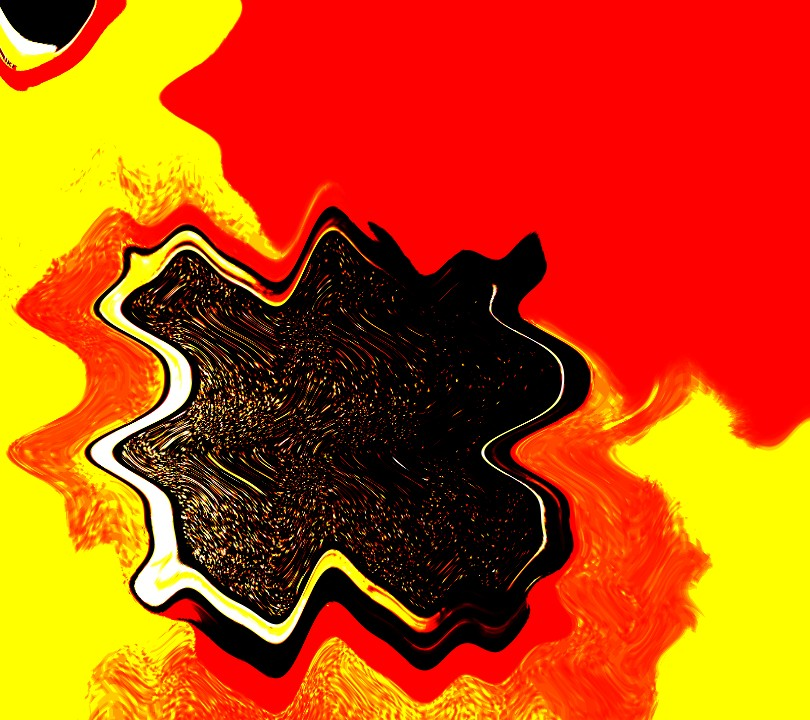
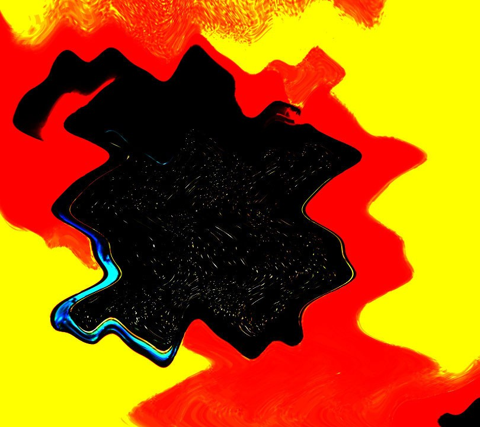

01
Reflective Form Study
Beginning with a simple square reference, I adjusted the colour distribution and then used wave distortion to make the surface feel unstable, reflective, and full of internal motion. The image moves away from documentation and toward visual tension.
Levels
Wave Filter
Reflective Texture
High Contrast